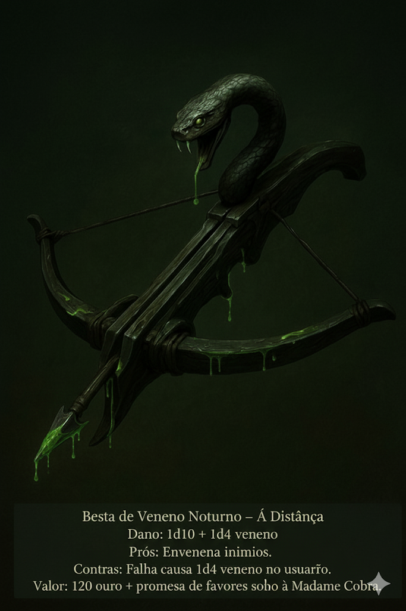
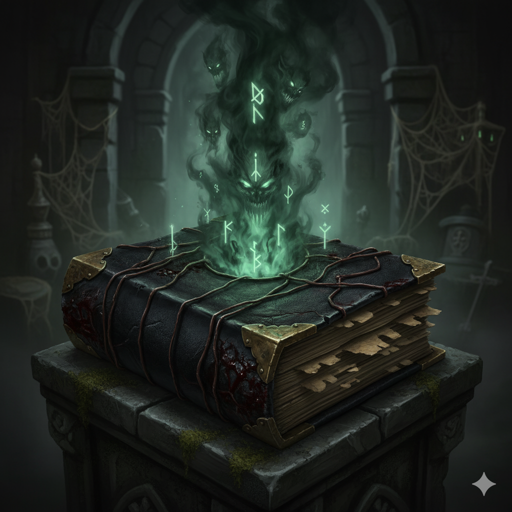
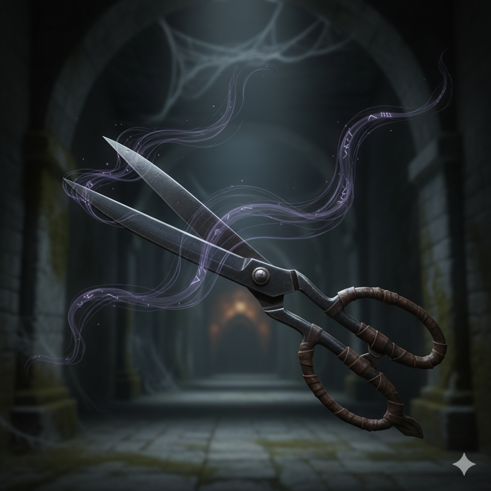
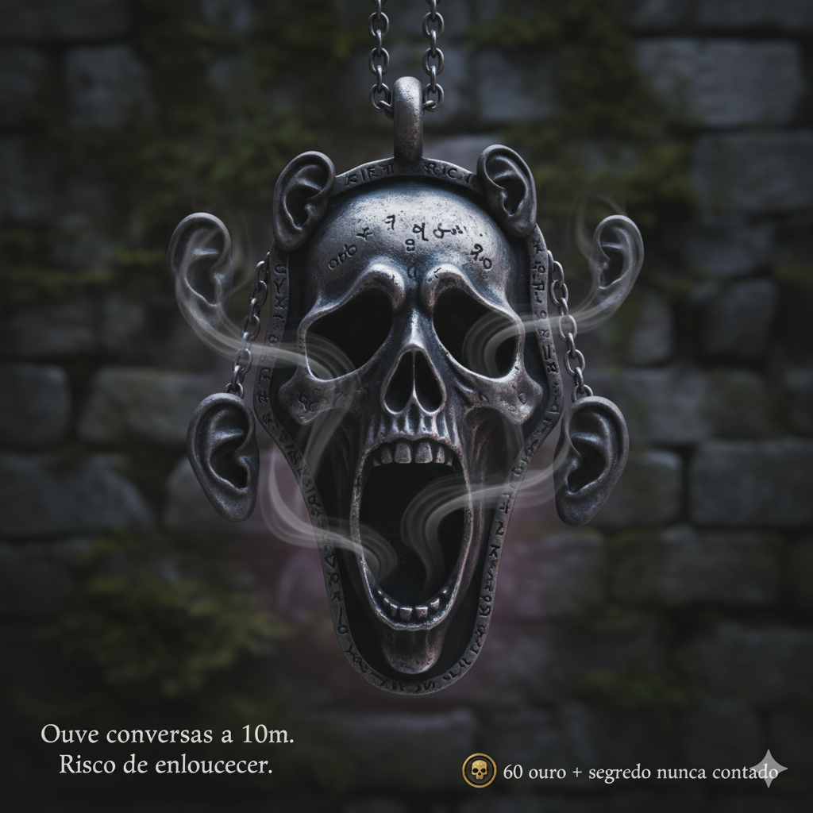

Itens Especiais
Besta de Veneno Noturno
Tipo: À Distância
Dano: 1d10 + 1d4 veneno
Prós: Envenena inimigos.
Contras: Falha causa 1d4 veneno no usuário.
Valor: 120 ouro + promessa de favores sombrios à Madame Cobra.
Morellonomicon
O Morellonomicon é um tomo antigo e aterrador, encadernado em couro negro que parece pulsar sob a luz...
- Sussurros Profanos: Terror/paralisia em inimigos próximos.
- Ritual de Vitalidade Sombria: Recupera vida (1d10) ou energia de aliados (1d6).
- Segredo Esquecido: Invoca efeitos mágicos instáveis, com custo de sanidade ou deformações.
Tesoura da Marionete
A tesoura corta a vontade de movimentação de inimigos, manipulando seus movimentos como marionetes.
- Não funciona sobre feras irracionais ou mortos-vivos.
- Não controla pensamentos ou decisões, apenas movimentos corporais.
- Mais eficaz em humanoides racionais.
Pingente dos Sussurros
Ouvir conversas à distância.
- Prós: Ouve conversas a 10m.
- Contras: Risco de roubar a voz (14+ no d20) do usuário se usado mais de 1 vez/dia. Usuário ficará mudo por tempo indeterminado.